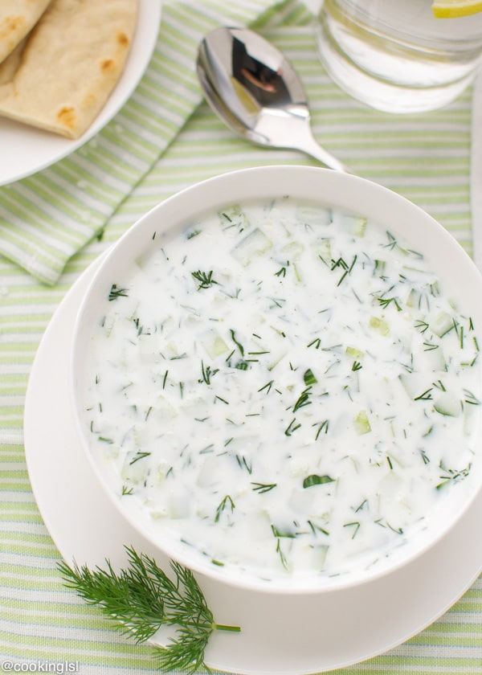

Tarator - Classic Bulgarian cold soup

This cold soup is among Bulgarians favorite foods for the summer.
It is served as a first course instead of a salad or between meals as refreshment. You might even see it served in a glass.
Most men here say it goes great with a glass of cold rakiya (Bulgarian grape or fruit brandy) or Ouzo.
Here's what you'll need
- 2 cucumbers
- 500g plain yogurt
- 3-4 garlic cloves
- crushed walnuts to taste (optional)
- 1 bunch fresh dill
- oil of choice
- salt
- water
Directions
The instructions couldn't be simpler, you can even leave your child to make it for you!
- Cut the cucumbers into small cubes or thinly grated and put them in a bowl.
(Cubed vs grated will change your final consistency so keep that in mind)
- Add your yogurt to the bowl with the cucumbers
- Add minced garlic, the dill, salt to taste, oil and optionalcrushed walnuts
- Stir to combine until yogurt has blended well with rest of ingredients
- Add as much water as you need to reach a consistency that you like, but be careful not to make it too thin
- Put into refrigerator to cool, or add ice cubes
- Serve cold and enjoy!